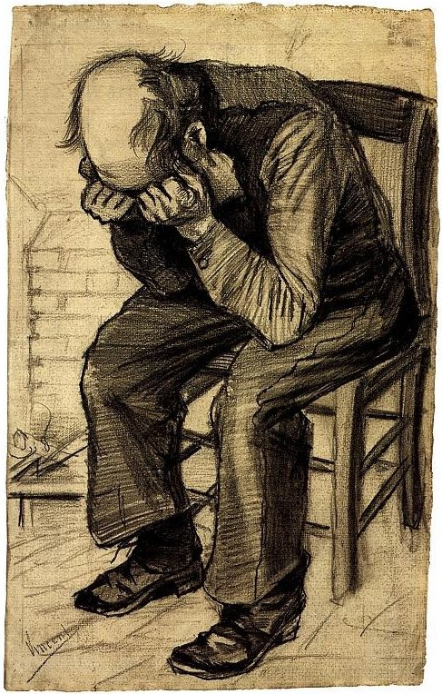

A LAS PUERTAS DE LA ETERNIDAD

Vincent van Gogh sufría una crisis aguda en estos últimos días de su vida. El diagnóstico fue
“manía aguda con delirio generalizado”. Los psiquiatras no se ponen de acuerdo hoy en día sobre
este diagnóstico tan ambiguo. Muchos hablan de epilepsia o trastorno bipolar, posiblemente ayudado
por un consumo excesivo de absenta, otro casi permanente de tabaco y varias enfermedades venéreas.
Van Gogh lo pasó realmente mal en el hospital. Fue justo después de su famoso incidente con la oreja.
Al parecer sufrió en esa época ataques de confusión e inconsciencia seguidos de períodos de estupor e
incoherencia durante los cuales generalmente no podía pintar, dibujar o incluso escribir cartas.
En los pocos momentos que podía, el artista se ponía a realizar lienzos como si se acabara el mundo,
una actividad febril que se ve en estas pinceladas urgentes que dan pistas de su colapso mental. Además
lo hacía de memoria (¡y que memoria! es sorprendente la fidelidad con la que recordó estas obras de hacía
casi una década). En esos momentos, los más tristes de su vida, debió recordar esos viejos dibujos en los
que había retratado a un anciano cansado, ese viejo apenado esperando en las puertas de la eternidad.